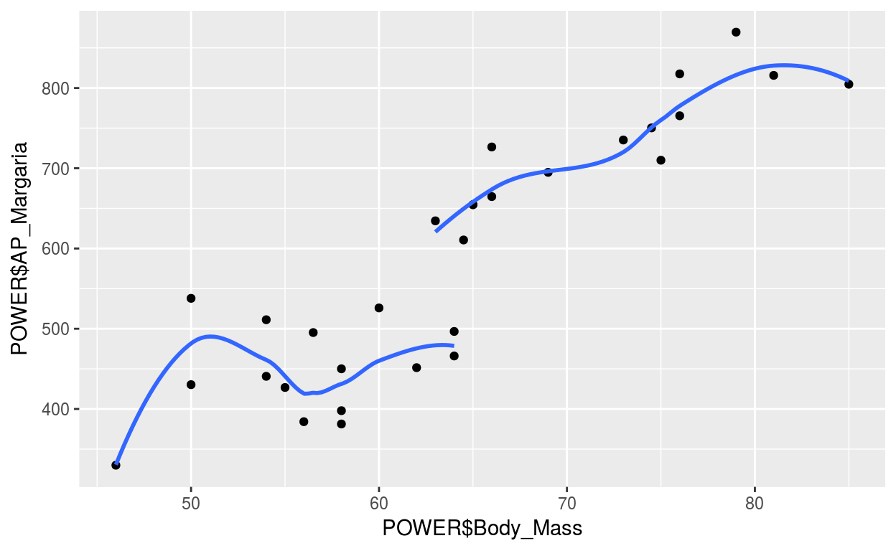

Ch6: Modelling Relationships - Regression
Introduction
One challenge encountered in Sports and Exercise Science is the investigation of whether one or more of a set of explanatory variables are related in any way to a particular continuous response variable.
In many instances, predicting the response variable for a future subject is the aim. For example blood lactate endurance markers (of which there are many) are often used to predict an athlete’s finishing time in a race. Prediction however may not be the primary aim in studies where the researcher is interested in identifying variables that explain significant proportions of the variability in the response in question. Examples here might involve identifying the variables that explain a person’s percentage body fat (e.g. gender, age or exercise level) or studying to what extent physiological measures and recent altitude attained might explain the variability in successful ascent times on Mont Blanc.
The statistical technique required is called regression which allows the researcher to model the dependency of a response variable of interest on one or more explanatory variables. Recall that the response variable is the key variable of interest (the one the researcher wishes to predict or explain) while the explanatory variable is a variable used to model the variability in the response variable.
The first illustration presented is the simplest case where a single explanatory variable is available.
Simple Linear Regression
Simple linear regression is the name given to the statistical technique that is used to model the dependency of a response variable on a single explanatory variable - the word ‘simple’ refers to the fact that a single explanatory variable is available. Simple linear regression is appropriate if the average value of the response variable is a linear function of the explanatory i.e. the underlying dependency of the response on the explanatory appears linear.
The simple linear regression model is of the form Response Variable = intercept + slope*Explanatory Variable + random (natural) variability where the intercept and slope are of key importance and must be estimated from a sample of data from the relevant population. Note that the model implies that the relationship between the response and the explanatory is linear (i.e. adequately represented by a line) with some random scatter about the line. The slope represents the change in average response per unit increase in the explanatory. The intercept represents the average response when the explanatory is equal to zero (and is often only of limited importance).
Inference in Regression: sample to population
If a different sample was chosen from the population is it likely that the resulting estimated regression equation (line of best fit) will be exactly the same? By now the reader should realise that the intercept and slope are in fact nothing but estimates of the true parameters of interest, the actual intercept and slope relating to the population of interest. The estimated standard error (ese) for the sample intercept and slope are needed therefore in order that interval estimates can be provided for the true but unknown corresponding population parameters. This is the same logic that appears in virtually all chapters of this text - think sample statistic and subsequent confidence interval for the corresponding population parameter.
The estimated standard error of the slope has a secondary role as the basis of a test statistic to investigate whether there is evidence of a significant dependence of the response variable on the explanatory variable in the population.
3 km Running Times (Revisited)
Study Description: Sixteen male well-trained middle and long distance runners performed a 3 km time trial and a number of running tests in the laboratory including their running velocity (km.h-1) at a blood lactate concentration of 4 mmol.l-1 (v-4mM) and at their Lactate Threshold (v-Tlac). All the laboratory testing took place on a motorised treadmill while distance running performance was determined by 3 km time trials on an indoor 200 m track.
Aims: To investigate whether there is sufficient evidence of a dependency of 3 km running time on v-4mM in the population of male runners of heterogeneous ability from which the samples arose.
Scatter plot of 3km runnning time: Time vs VO2 MAx: v_Vo2Max with smoother 
The “obvious” subjective impression is that faster 3 km Times are achieved by individuals with higher v-4mM scores. Further to this the smoother suggests that the overall trend is plausibly linear.
Regression of runnning times vs VO2 Max
##
## Call:
## lm(formula = Time ~ v_4mM, data = RUNNING)
##
## Residuals:
## Min 1Q Median 3Q Max
## -0.64390 -0.15561 0.00952 0.10292 0.50095
##
## Coefficients:
## Estimate Std. Error t value Pr(>|t|)
## (Intercept) 15.82228 0.69800 22.668 1.96e-12 ***
## v_4mM -0.37285 0.04067 -9.168 2.71e-07 ***
## ---
## Signif. codes: 0 '***' 0.001 '**' 0.01 '*' 0.05 '.' 0.1 ' ' 1
##
## Residual standard error: 0.2911 on 14 degrees of freedom
## Multiple R-squared: 0.8572, Adjusted R-squared: 0.847
## F-statistic: 84.05 on 1 and 14 DF, p-value: 2.71e-07There is a significant dependence of 3 km time on v-4mM by virtue of the P-value (highlighted in bold) for the Null Hypothesis that the population slope is zero. As the P-value is very small there is convincing evidence against the Null Hypothesis and a claim is made that the population slope is different from zero i.e. there is a meaningful dependence of 3 km Time on v-4mM.
The intercept is estimated to be 15.8223 and the sample slope to be -0.37285 (both highlighted in bold in Box 6.1.1.1) and hence the regression equation is (to two decimal places)
\[Average\quad 3km\quad Time = 15.82 - 0.37*v-4mM\] Scatter plot of 3km runnning times vs VO2 Max with line of best fit
The information provided by the sample slope is that it is estimated that a 1 km.h-1 increase in v-4mM in a laboratory test will result in an improved 3 km Time of 0.37 minutes on average. Clearly this is a meaningful improvement and indicates that distance runners should attempt to improve v-4mM by adopting an appropriate training regime.
The sample intercept states that athlete with a v-4mM of zero will have an average 3km Running Time of 15.8 minutes. This makes no sense and highlights a very important feature of any regression line, namely that a regression line is only valid for the range of data collected. The minimum v-4mM recorded was 14.2 \(km.h^{-1}\) and the predicted 3 km Running Time for an athlete with this v-4mM value would be 15.82-0.37*(14.2) = 10.56 minutes, which is much more plausible. In general, never try to extrapolate the regression equation outside the range of the explanatory variable!
The estimated standard errors of the intercept and slope are given in Box 6.1.1.1 (under the column SE Coef) and are 0.6980 and 0.04067 respectively. When considering 95% Confidence Intervals for a population mean the formula ‘sample mean ± twice its estimated standard error’ was used as a quick and robust method. The same approximation applies in simple linear regression where a ‘rough’ 95% confidence interval estimate of population slope is calculated as ‘sample slope ± twice its estimated standard error’. For example using the output in Box 6.1.1.1a rough 95% CI for the v-4mM regression coefficient is calculated as \(-0.37285 ± 2*0.04067= (-0.45, -0.29)\). This interval is wholly negative providing evidence that the slope is significantly different from zero in the negative direction.
The approximation provided by the ‘quick and robust method’ is quite accurate and this is usually the case for moderate to large sample sizes. The same approach applies for the intercept but this, of course, is seldom of interest.
The estimated standard error of the intercept and slope can be used also to generate a 95% Confidence Region for the population regression equation (i.e. the underlying true line linking the average 3km Time to v-4mM)
Plot a scatter plot of 3km time vs v-4mM with 95% confidence interval
The Confidence Region represents the ‘band’ where the true regression line could plausibly lie. If so desired the graph can be used to approximate interval estimates of the mean 3 km Time in the population of well-trained middle and long distance runners. For example a rough and ready approximation of the population mean 3 km Time for those runners with v-4mM equal to 18 appears to be somewhere between 9 and 9½ minutes.
Conclusion: There was evidence of a significant negative dependence (P < 0.001) of 3 km Running Time on v-4mM in the population of male runners. Further it is estimated that 3 km Running Time decreases by between 0.29 to 0.46 minutes on (average) for every unit increase in v-4mM across a range of v-4mM from 14 to 20 \(km.h^{-1}\).
Assessing the Adequacy of a Simple Linear Regression
One of the key notions in Regression is the concept of ‘explained variability’. A useful regression model is one where the variability displayed in the response variable can be explained by its dependence on one or more explanatory variables. Indeed this very notion is one basis for assessing the adequacy of regression models.
For example, in a simple linear regression the scatter about the regression line can be used to estimate the amount of variability in the response variable ‘explained’ by its dependency on the explanatory variable. If, for example, the data fall on a straight line then there is perfect dependence and all of the variability in the response is due to the explanatory variable. If, however, the data scatter considerably about the line of best fit then not all of the variability in the response is due to the explanatory variable. The ‘amount’ of explained variability is typically summarised by the R2 statistic. The value of R2 is always between 0 and 1 (or 0% and 100% when expressed as a percentage) where a value of 1 (100%) corresponds to perfect dependence of the response on the explanatory variable i.e. all of the variation in the response is explained by the explanatory variable. At the other end of the scale, 0 corresponds to no dependence whatsoever of the response variable on the explanatory variable. The higher the value of R2 the more ‘useful’ is the simple linear regression.
The reported value of the R2 statistic in the regression output for the 3 km Running Time example (Box 6.1.2) is 85.7% and hence a considerable amount (i.e. 85.7%) of the variability in 3 km Running performance is explained by its dependence on the v-4mM blood lactate endurance marker.
Assumptions for the Simple Linear Regression Model There are of course important assumptions underlying a simple linear regression model and these assumptions must be checked.
A simple linear regression has the following underlying assumptions:
- The sample is representative of the population of interest and the subjects are independent (Independence assumption);
- The relationship between the mean response and the explanatory variable is linear in the population (Linearity assumption);
- The response exhibits variability about the population regression line in the shape of a Normal distribution (Normality assumption);
- The standard deviation of the response is the same for any given value of the explanatory variable (Equal Spreads assumption).
The first assumption relates to the sample itself – if the sample is not representative of the population of interest all inference is extremely dubious. Independence is valid in the 3 km Running Illustration as the response and explanatory variables were measured once only for each runner separately under standard conditions as individual time trials.
The assumption that relates to Linearity can be checked by looking at the scatter plot. If the linearity assumption is valid the overall pattern should resemble a linear pattern (a smoother is very useful here).
The Normality and Equal Spreads assumptions relate to the distribution and spread of the response about the population regression line. To investigate whether these assumptions are plausible, based on the sample available, is best achieved using suitable residual plots.
A residual (in the regression context) is the difference between the observed value of the response and that predicted by the regression equation (the so-called fitted value) at the value of each subject’s explanatory variable in turn. Two such residuals are highlighted in Figure 6.1.1.4 for Runners 7 and 9, the former being a negative residual and the latter a positive residual.
Scatter plot of 3km time: Time vs v_4mM with smooth
Residuals can be used to provide an indication as to how well the model fits the data. One problem with using residuals, however, is that their values depend on the scale of the response variable. This makes it difficult to identify residuals that are ‘too large’ in a general sense. The conventional way of overcoming this is to standardise the residuals by dividing the residual by an estimate of its standard error. Standardising the residuals makes their scale easier to interpret; values greater than 2 or less than -2 for example are considered large and the validity/correctness of such observations would be worth rechecking. The value 2 is used since the vast majority (roughly 95%) of the standard Normal distribution lie between -2 and 2 and the assumptions effectively imply that the standardised residuals should roughly follow a standard Normal distribution.
The validity of the simple linear regression assumptions can be checked graphically using different plots of the standardised residuals. The two most useful residual plots are i) A plot of the standardised residuals (on the vertical axis) against the fitted values from the regression. If the Linearity and Equal Spreads assumptions are valid, this plot should show a random scatter of points; ii) A Normal probability plot of the standardised residuals. This should be of a roughly linear shape if the Normality assumption is adequate.
Plot of standarised residuals vs fitted values  There is no evidence against the linearity or equal spreads assumption as the residuals appear to be scattered in more or less a random fashion at each value of v-4mM. Note also that one of the standardised residuals is (slightly) below -2 and it may be worth rechecking the data recorded for that individual (although, in fact, it would be expected that roughly 1 in 20 standardised residuals would be outside the range -2 to +2!).
There is no evidence against the linearity or equal spreads assumption as the residuals appear to be scattered in more or less a random fashion at each value of v-4mM. Note also that one of the standardised residuals is (slightly) below -2 and it may be worth rechecking the data recorded for that individual (although, in fact, it would be expected that roughly 1 in 20 standardised residuals would be outside the range -2 to +2!).
Normal probability plot of standarised residuals
##
## Anderson-Darling normality test
##
## data: var
## A = 0.35453, p-value = 0.416Since this plot is more or less linear, the Normality assumption appears justified.
In the technical appendix, a selection of typical residual plots which make the simple linear regression assumptions doubtful are provided.
The next illustration highlights an area of Sports and Exercise Science where there are conflicting opinions about how to handle the dependency of some Response Variables on the Body Mass of a subject. This particular illustration also shows a situation where the intercept is of interest.
VO2 max and Body Mass
Background: VO2 max may depend on Body Mass. In the Sports and Exercise science the dependency of such a variable on Body Mass is often removed by forming a new variable representing the ratio of the two variables i.e. by dividing a subject’s VO2 max (litres.min-1) by Body Mass.
Study Description: Twenty three physically active males (sample mean age of 30 years with a sample standard deviation of 4 years) took part in the study. Each performed an incremental treadmill test to volitional exhaustion to measure VO2 max. Gas collection was carried out using a metabolic cart. In addition their Body Mass was measured.
Aims: To model the dependency of VO2 max on Body Mass and to investigate whether a ‘ratio scaled variable’ is appropriate to remove the dependency.
Plot a scatter plot of VO2max vs Body_Mass with smoother
The main aim is to investigate whether forming a new ‘ratio scaled’ variable, by dividing VO2 max by Body Mass in some sense removes the dependency of VO2 max on Body Mass and therefore this ratio-adjusted variable encapsulates the dependency directly. If this approach is plausible it would imply that the a simple linear regression model relating VO2 max to Body Mass must have intercept zero i.e. a person of zero Body Mass should have zero VO2 max. This can be checked formally by fitting a simple linear regression model and either generating a 95% CI for the intercept and checking whether zero is a plausible value for the population intercept or through the results of a hypothesis test where the null hypothesis is that the population intercept is zero.
Regression of VO2max and Body_Mass
##
## Call:
## lm(formula = VO2max ~ Body_Mass, data = V02_MAX_AND_BODY_MASS)
##
## Residuals:
## Min 1Q Median 3Q Max
## -0.65416 -0.31996 -0.05478 0.28809 0.71893
##
## Coefficients:
## Estimate Std. Error t value Pr(>|t|)
## (Intercept) 0.758221 0.640800 1.183 0.25
## Body_Mass 0.046305 0.008749 5.292 3.01e-05 ***
## ---
## Signif. codes: 0 '***' 0.001 '**' 0.01 '*' 0.05 '.' 0.1 ' ' 1
##
## Residual standard error: 0.389 on 21 degrees of freedom
## Multiple R-squared: 0.5715, Adjusted R-squared: 0.5511
## F-statistic: 28.01 on 1 and 21 DF, p-value: 3.014e-05Using the regression output, there is evidence that the intercept is not significantly different from zero (P=0.25) and hence there is (some) justification here to divide VO2 max by Body Mass to remove its effect.
Notice that this is another atypical example where the desired result is not to find a significant result!
The sample slope is positive and significant (P<0.001) providing evidence of a dependency of VO2 max on Body Mass regression equation where it is estimated that VO2 max increases by 0.05 litres.min-1 per kilogram increase in Body Mass. The intercept is not significantly different from zero (P=0.25) and hence a “proportional model” could be appropriate here in which case adjusting VO2 max by simply dividing by Body Mass may be sufficient to remove its effect on VO2 max.
Plot a scatterplot of Ratio adjust VO2max/Body_Mass vs Body_Mass 
Pearson correlation test: Ratio Adjusted VO2max/Body_Mass vs Body_Mass
##
## Pearson's product-moment correlation
##
## data: V02_MAX_AND_BODY_MASS$VO2max/V02_MAX_AND_BODY_MASS$Body_Mass and V02_MAX_AND_BODY_MASS$Body_Mass
## t = -0.99721, df = 21, p-value = 0.33
## alternative hypothesis: true correlation is not equal to 0
## 95 percent confidence interval:
## -0.5744832 0.2187411
## sample estimates:
## cor
## -0.2126333The P-value for the hypothesis test of zero correlation is not less than 0.05 providing evidence of no significant dependency of Ratio-Adjusted max on Body Mass.
Conclusion: The ‘ratio scaled’ VO2 max /Body Mass appears to remove the dependency of VO2 max (\(litres.min^{-1}\)) on Body Mass on the basis of a test for zero intercept in a simple linear regression model.
Using Simple Linear Regression to Make Predictions
The examples to date involved identifying whether there was evidence of a significant dependence of the response variable on the explanatory variable. Once a dependency has been established the regression equation can be used for predictive purposes. The next illustration highlights such a scenario where data collected from a set of oarsmen are used to model the dependency of the time taken to complete a 5000 m race on a single explanatory variable, Peak Power, to allow prediction of 5000 m Time for any future oarsmen based on his Peak Power.
Rowing Performance
Background: Studies have reported that high levels of strength, power production, sound rowing technique and certain anthropometrical characteristics are all beneficial to rowing performance. The use of laboratory tests to determine the relationship between sporting performance and physiological variables is widespread. This information could be of value for training and testing of oarsmen.
Study Description: Eighteen experienced male club and university rowers had their time recorded to complete a 5000 m standard course under simulated conditions. In addition each oarsman had his Peak Power measured on an ergometer.
Aim: To investigate the dependency of 5000 m rowing performance on Peak Power in order to predict likely 5000 m time for a future oarsman with a specific value of Peak Power.
Plot a scatter plot of Rowing_Time_5000m vs Peak_Power with smoother
Regression Analysis: Rowing_Time_5000m versus Peak_Power (W) and Stroke_Length (m)
##
## Call:
## lm(formula = Rowing_Time_5000m ~ Peak_Power + Stroke_Length,
## data = ROWING5000M)
##
## Residuals:
## Min 1Q Median 3Q Max
## -29.269 -5.828 3.740 8.871 27.293
##
## Coefficients:
## Estimate Std. Error t value Pr(>|t|)
## (Intercept) 1646.69635 66.80274 24.650 1.50e-13 ***
## Peak_Power -0.44100 0.08189 -5.385 7.58e-05 ***
## Stroke_Length -141.77311 46.55663 -3.045 0.00818 **
## ---
## Signif. codes: 0 '***' 0.001 '**' 0.01 '*' 0.05 '.' 0.1 ' ' 1
##
## Residual standard error: 16.04 on 15 degrees of freedom
## Multiple R-squared: 0.8606, Adjusted R-squared: 0.842
## F-statistic: 46.3 on 2 and 15 DF, p-value: 3.818e-07The estimated regression equation is Average 5000 m Time = 1518– 0.593Peak_Power allowing a prediction of 5000 m Rowing Time to be made by multiplying Peak Power by 0.593 and subtracting this from 1518. For example, it is predicted that any oarsman of the same standard as those in the sample with a Peak Power of 800 watts will have an average Rowing Time of 1518– 0.593800 = 1043.6 seconds (i.e. 17.4 minutes).
The R2 statistic of 77% suggests that the predictive power of the model is quite good. One oarsman was identified as having a (standardised) residual that may be worthy of attention. This standardised residual is negative suggesting that this oarsman’s Rowing Time is notably lower than those with an identical Peak Power.
Normal probability plot of standarised residuals
##
## Anderson-Darling normality test
##
## data: var
## A = 1.1333, p-value = 0.004233Plot of standarised residuals vs fitted values
It is often of interest to make a prediction of the likely value of the response for a particular individual with a specific value of the explanatory variable. If this is the case a Prediction Interval is appropriate as, in this Illustration, it provides an estimate of the likely Rowing Time for a single future oarsmen with a particular Peak Power reading.
Plot scatter plot of 5000m rowing times versus peak power with 95% PI
he width of the Prediction Interval is 86 seconds which is quite wide given the sample range of Rowing Times recorded. Hence, even though the regression model is appropriate and the R2 statistic is quite high, the model still lacks precision when predicting at the individual level.
Conclusion: There was convincing evidence that the dependency of 5000 m Rowing Time on Peak Power could be adequately modelled using a straight line. It is estimated that nearly 80% of the variability in 5000 m Rowing Time can be explained by its dependency on Peak Power. 95% Prediction Intervals for future oarsmen of given Peak Power however are quite wide (with respect to the range of 5000 m Rowing Times recorded).
Multiple Regression
The multiple (linear) regression model is used in scenarios where the response variable is dependent on two or more explanatory variables. The first illustration revisits the data collected from the sample of oarsmen where an additional explanatory variable is available. A natural question to consider is whether a better model (in terms of predictive power) arises by including information contained in both these explanatory variables compared to the predictive power available by fitting a simple linear regression using either variable on its own.
The multiple linear regression model for two explanatory variables is of the form \[Response Variable = Intercept \\+ Coeff1*Explanatory\quad Variable1\\ + Coeff2*Explanatory\quad Variable2\\ + random\quad (natural)\quad variability\]
There is an important difference in the role of explanatory variables in multiple regression compared to simple linear regression. The regression coefficients for the two explanatory variables in the equation above (i.e. Coeff1 and Coeff2) represent the effect of one explanatory variable having corrected for the other.
Rowing Performance (Revisited)
Study Description: Eighteen experienced male club and university rowers had their finishing time recorded having completed a 5000 m race in addition to their Peak Power and Stroke Length (using video analysis).
Aim: To investigate whether 5000 m rowing performance depends on Peak Power and/or Stroke Length.
Analysis: As in simple linear regression it is important to examine the relationships among all the variables involved by providing scatter plots and sample correlation coefficients for each pair of variables before any formal analysis is undertaken. Pairwise scatter plots are useful graphical summaries for multiple regression analyses as they provide a starting point for assessing the likely relationship between all variables (i.e. response and explanatory variables)
Matrix Scatter Plot of Rowing_Time_5000m, Peak_Power, and Stroke_Length 
## Rowing_Time_5000m Peak_Power Stroke_Length
## Rowing_Time_5000m 1.0000000 -0.8800186 -0.7688264
## Peak_Power -0.8800186 1.0000000 0.6090869
## Stroke_Length -0.7688264 0.6090869 1.0000000##
## Call:
## lm(formula = Rowing_Time_5000m ~ Peak_Power + Stroke_Length,
## data = ROWING5000M)
##
## Residuals:
## Min 1Q Median 3Q Max
## -29.269 -5.828 3.740 8.871 27.293
##
## Coefficients:
## Estimate Std. Error t value Pr(>|t|)
## (Intercept) 1646.69635 66.80274 24.650 1.50e-13 ***
## Peak_Power -0.44100 0.08189 -5.385 7.58e-05 ***
## Stroke_Length -141.77311 46.55663 -3.045 0.00818 **
## ---
## Signif. codes: 0 '***' 0.001 '**' 0.01 '*' 0.05 '.' 0.1 ' ' 1
##
## Residual standard error: 16.04 on 15 degrees of freedom
## Multiple R-squared: 0.8606, Adjusted R-squared: 0.842
## F-statistic: 46.3 on 2 and 15 DF, p-value: 3.818e-07## Df Sum Sq Mean Sq F value Pr(>F)
## Peak_Power 1 21429 21429 83.336 1.63e-07 ***
## Stroke_Length 1 2384 2384 9.273 0.00818 **
## Residuals 15 3857 257
## ---
## Signif. codes: 0 '***' 0.001 '**' 0.01 '*' 0.05 '.' 0.1 ' ' 1## Peak_Power Stroke_Length
## 1.589792 1.589792he plot labelled A has Peak Power on the horizontal axis while in plot B Stroke Length is on the horizontal axis. These plots suggest a negative relationship between 5000 m Rowing Time and both Peak Power and Stroke Length where increasing values of Peak Power and Stroke Length are associated with better (i.e. lower) Rowing Times. The remaining plot (C) is a plot of the two explanatory variables, with Peak Power on the vertical axis and Stroke Length on the horizontal axis. This plot provides a visual impression as to whether the two explanatory variables are correlated which indeed seems to be the case here.
P value test for Rowing_Time_5000m vs Peak_Power, Stroke_Length vs Peak_Power, Rowing_Time_5000m vs Stroke_Length
##
## Pearson's product-moment correlation
##
## data: ROWING5000M$Rowing_Time_5000m and ROWING5000M$Peak_Power
## t = -7.4116, df = 16, p-value = 1.472e-06
## alternative hypothesis: true correlation is not equal to 0
## 95 percent confidence interval:
## -0.9546617 -0.7012672
## sample estimates:
## cor
## -0.8800186##
## Pearson's product-moment correlation
##
## data: ROWING5000M$Stroke_Length and ROWING5000M$Peak_Power
## t = 3.0719, df = 16, p-value = 0.007297
## alternative hypothesis: true correlation is not equal to 0
## 95 percent confidence interval:
## 0.1987280 0.8377349
## sample estimates:
## cor
## 0.6090869##
## Pearson's product-moment correlation
##
## data: ROWING5000M$Rowing_Time_5000m and ROWING5000M$Stroke_Length
## t = -4.8092, df = 16, p-value = 0.0001927
## alternative hypothesis: true correlation is not equal to 0
## 95 percent confidence interval:
## -0.9093077 -0.4710281
## sample estimates:
## cor
## -0.7688264There is evidence of a significant correlation between the response variable 5000 m Rowing Time and each of Peak Power (r=-0.88, p<0.001) and Stroke Length (r=-0.77, p<0.001). This suggests each explanatory variable may be a useful predictor of 5000 m Time in its own right in a regression model but the significant correlation between the two explanatory variables (r=0.61, p=0.007) suggests that either one of these variables may not be given additional information about 5000 m Time to that from the other variable. The next step is to use multiple regression to model the dependency of the response on both explanatory variables
Regression of Rowing_Time_5000m vs Peak_Power and Stroke_Length
##
## Call:
## lm(formula = Rowing_Time_5000m ~ Peak_Power + Stroke_Length,
## data = ROWING5000M)
##
## Residuals:
## Min 1Q Median 3Q Max
## -29.269 -5.828 3.740 8.871 27.293
##
## Coefficients:
## Estimate Std. Error t value Pr(>|t|)
## (Intercept) 1646.69635 66.80274 24.650 1.50e-13 ***
## Peak_Power -0.44100 0.08189 -5.385 7.58e-05 ***
## Stroke_Length -141.77311 46.55663 -3.045 0.00818 **
## ---
## Signif. codes: 0 '***' 0.001 '**' 0.01 '*' 0.05 '.' 0.1 ' ' 1
##
## Residual standard error: 16.04 on 15 degrees of freedom
## Multiple R-squared: 0.8606, Adjusted R-squared: 0.842
## F-statistic: 46.3 on 2 and 15 DF, p-value: 3.818e-07
The output is quite similar to that generated when fitting a simple linear regression except that the regression equation now has three terms; an intercept and regression coefficients for each of the two explanatory variables.
The estimated regression equation is given as Average 5000 m Rowing Time = 1664.43– 0.44 Peak Power – 152.5*Stroke Length
Note “Average” here denotes the population average for any individual with specific values of Peak Power and Stroke Length. There is an important difference as to how the regression coefficients are interpreted compared to simple linear regression. The first term in the regression equation is an estimate of the intercept i.e.1664 here (a good year for Beer?). It represents the average 5000 m Rowing Time when both Peak Power and Stroke Length are equal to zero and despite being of no practical interest it is essential to the model, is significant and should be retained in the model. The regression coefficients for the two explanatory variables are of primary interest as they represent the change in the “average” 5000 m Rowing Time per unit increase in the corresponding explanatory variable corrected for the other explanatory variable. The regression coefficient for Peak Power for example states that for every 1 watt increase in Peak Power 5000 m Rowing Time decreases on average by 0.44 seconds, if Stroke Length is held constant. This ‘effect’ of Peak Power is assumed to be the same for every Stroke Length value. In a similar manner, the regression coefficient for Stroke Length is an estimate of the likely effect of Stroke Length on 5000 m Rowing Time in the population of oarsmen. The regression coefficient states that for every 1 m increase in Stroke Length, 5000 m Rowing Time decreases, on average, by 153 seconds if Peak Power is held constant. An increase of 1 m in Stroke Length is of course massive and a more sensible interpretation might be that for every 1 cm increase in Stroke Length 5000 m Rowing Time decreases, on average, by 1.53 seconds if Peak Power is held constant.
The next step in the analysis is to provide evidence as to whether the explanatory variables are significant in the population of oarsmen.
In particular the Null and Alternative Hypothesis for the F-test for providing evidence as to whether a multiple regression model contains at least one useful (i.e. significant) explanatory variable is as follows: H0: The population regression coefficients are zero for all explanatory variables; H1: The population regression coefficient is different from zero for at least one explanatory variable.
Clearly if the Null Hypothesis is not rejected then it is plausible that the response variable has no dependence on any of the explanatory variables and the multiple regression model is a waste of time! The P-value for the F-test test can be found in the section of the multiple regression output labelled ‘Analysis of Variance’. In the current example the P-value is <0.001 and a conclusion can be made that at least one of the explanatory variables is useful for predicting 5000 m Rowing Time. The remaining task is to identify which of the explanatory variables are responsible for this significant result and separate tests of the regression coefficients are available for precisely this purpose.
The P-value for testing whether the regression coefficient for Peak Power is zero is less than 0.001 so there is convincing evidence that Peak Power has a significant effect on 5000 m Rowing Time, after allowing for the effect of Stroke Length. The P-value for testing the regression coefficient for Stroke Length is 0.007 providing convincing evidence that Stroke Length has a significant effect on 5000 m Rowing Time, after allowing for the effect of Peak Power. Hence both explanatory variables are separately useful and significant explanatory variables of 5000 m Rowing Time.
Note that it might seem unnecessary at this stage to consider the result of the F-test and instead go straight to the separate tests for the regression coefficients and pick off those that are significant. There are several problems with this approach however as will be seen in a later illustration.
Assessing the Adequacy of a Multiple Linear Regression
Recall that the predictive power of a simple linear regression model, as estimated by the R2 statistic, is related not only to the precision in the estimates of the regression coefficients but also to the scatter about the line of best fit. The smaller the scatter, then the better the fit of the model to the data and consequently the larger the value of R2 will be. The same principle applies in multiple regression but a slight adjustment must be made to the R2 statistic as it will always increase whenever an additional variable is included in the model regardless of whether it is significant or not. The adjustment takes into account the number of explanatory variables in the model and the appropriately named R2-adjusted statistic should be reported. The interpretation of the adjusted statistic is the same however, providing an indication of the predictive power of the model. The R2-adjusted for the two-explanatory model in question is 84.6% (a slight reduction on the corresponding R2 of 86.4%) suggesting that a considerable amount of the variability in 5000 m Rowing Time is explained by an oarsman’s peak power and stroke length. The remaining 15.4% is attributed to random variation not explained by this multiple regression model.
Using Multiple Regression to make Predictions
Predictions can be made using the regression equation for any further subject from the same population whose Peak Power and Stroke Length are known. For example the predicted 5000 m Rowing Time for an individual oarsman with Peak Power of 800 watts and a stroke length of 1.8 metres is 1038.7 secondswith an accompanying 95% Prediction Interval for one such oarsman.
Predicted Values for New Observations New Obs Fit SE Fit 95% PI 1 1038.71 4.09 (1003.43, 1073.98)
The likely 5000 m Rowing Time for such an oarsmen is between 1003 and 1074 seconds. This estimate, based on using two explanatory variables, is only marginally narrower than the corresponding prediction interval from a simple linear regression with Peak Power alone. Despite the significant increase in R2-adjusted the improvement in actual precision is still negligible in any practical terms.
Conclusions: There is evidence that both Peak Power and Stroke Length are both useful explanatory variables of 5000 m Rowing Time (P<0.001 for both explanatory variables). It is estimated that for every 1 cm increase in Stroke Length 5000 m Rowing Time decreases on average by 1.53 seconds if Peak Power is held constant. Similarly for each 1 watt increase in Power Output, 5000 m Rowing Time decreases on average by 0.44 seconds if Stroke Length is held constant. The R2-adjusted for the model is 84.6%, further suggesting that both Power Output and Stroke Length are important characteristics of rowing performance. Despite this the width of 95% Prediction Intervals are not reduced much from those based on Peak Power alone.
Assumptions for the Multiple Linear Regression Model
A multiple linear regression model has the following underlying assumptions:
- The sample is representative of the population of interest and the observations are independent (Independence assumption);
- The relationship between the average response and each of the explanatory variables is linear in the population (Linearity assumption);
- The response exhibits variability about the population linear regression model in the shape of a Normal distribution (Normality assumption);
- The standard deviation of the response is the same for any given value of the explanatory variables (Equal Spreads assumption).
Residual plots are again the key (graphical) diagnostics for checking the validity of these assumptions. As in simple linear regression plots of the standardised residuals against the fitted values and against each explanatory variable in turn can be used to assess the Linearity and Equal Spreads assumptions. If these assumptions are reasonable, plots of the residual plots against the fitted values (and against each explanatory) should exhibit a random pattern. The Normality assumption can be checked via a Normal Probability plot of the standardised residuals. If so required plotting the standardised residuals in the order the data were recorded to investigate for a ‘time order’ effect can check the Independence assumption.
The independence assumption appears justified as there is no reason to believe that any oarsman’s 5000 m Rowing Time should be influenced by any other oarsman as the oarsmen were recorded on separate trials. There does not appear to be any striking pattern of note in the Time Order plot.
The Normal Probability plot of the standardised residuals resembles a (plausibly) linear pattern and so the Normality assumption looks plausible. Although none of the standardised residuals were reported as atypically large or small (as all fall within -2 and +2) there is a suggestion of increasing variability with increasing 5000 m Rowing Time.
The next illustration involves a multiple linear regression example with three potential explanatory variables.
Body Fat and Anthropometry
Background: Densitometry is a standard approach used to ‘measure’ (percentage) Body Fat and involves the use of underwater weighing. It is of interest to determine if other variables, Body Mass, Height and Age are of some use in the ‘measurement’ of (percentage) Body Fat.
Study Description: As part of a PhD study at Glasgow University, a student obtained a representative sample of seventy-eight West of Scotland males, aged between 18 and 30 years, and ‘measured’ their percentage Body Fat (by Densitometry), Body Mass, Height and Age. Reference: Espinosa-Zepeda, Maria T. (1995). Metabolic rate related to body composition in lean muscular humans: a thesis submitted for the degree of Doctor of Philosophy in the Faculty of Medicine. Ph.D. Thesis 10159, Glasgow University (Supervisor:- Durnin, J.V.G.A.).
Aim: To model the dependency, if any, of % Body Fat on Body Mass, Height and Age in males.
Matrix scatter plot of Body_Fat by Age Body_Mass, and Height
## Body_Fat Age Body_Mass Height
## Body_Fat 1 NA NA NA
## Age NA 1 NA NA
## Body_Mass NA NA 1 NA
## Height NA NA NA 1##
## Call:
## lm(formula = Body_Fat ~ Body_Mass + Age + Height, data = BODY_FAT_MALE)
##
## Residuals:
## Min 1Q Median 3Q Max
## -7.4796 -2.6197 -0.4153 3.0576 7.9829
##
## Coefficients:
## Estimate Std. Error t value Pr(>|t|)
## (Intercept) 19.95691 10.63817 1.876 0.0646 .
## Body_Mass 0.13130 0.05740 2.288 0.0250 *
## Age 0.11959 0.05182 2.308 0.0238 *
## Height -0.11935 0.06496 -1.837 0.0702 .
## ---
## Signif. codes: 0 '***' 0.001 '**' 0.01 '*' 0.05 '.' 0.1 ' ' 1
##
## Residual standard error: 3.582 on 74 degrees of freedom
## (78 observations deleted due to missingness)
## Multiple R-squared: 0.1619, Adjusted R-squared: 0.1279
## F-statistic: 4.763 on 3 and 74 DF, p-value: 0.004319## Df Sum Sq Mean Sq F value Pr(>F)
## Body_Mass 1 43.4 43.43 3.384 0.06985 .
## Age 1 96.6 96.64 7.530 0.00761 **
## Height 1 43.3 43.33 3.376 0.07016 .
## Residuals 74 949.7 12.83
## ---
## Signif. codes: 0 '***' 0.001 '**' 0.01 '*' 0.05 '.' 0.1 ' ' 1
## 78 observations deleted due to missingness## Body_Mass Age Height
## 1.328381 1.052359 1.343930The main plots of interest are labelled as A, B and C representing the scatter plots of the response variable (on the vertical axis) against the three explanatory variables. It appears that there is a slight positive dependency of % Body Fat on Body Mass and Age and a possible negative dependency of % Body Fat on Height. An (anticipated) positive relationship is noticed between Height and Body Mass with little or no relationship between Age and Body Mass nor between Age and Height.
Regression of Body_Fat vs Age, Body_Mass, and Height
##
## Call:
## lm(formula = Body_Fat ~ Age + Body_Mass + Height, data = BODY_FAT_MALE)
##
## Residuals:
## Min 1Q Median 3Q Max
## -7.4796 -2.6197 -0.4153 3.0576 7.9829
##
## Coefficients:
## Estimate Std. Error t value Pr(>|t|)
## (Intercept) 19.95691 10.63817 1.876 0.0646 .
## Age 0.11959 0.05182 2.308 0.0238 *
## Body_Mass 0.13130 0.05740 2.288 0.0250 *
## Height -0.11935 0.06496 -1.837 0.0702 .
## ---
## Signif. codes: 0 '***' 0.001 '**' 0.01 '*' 0.05 '.' 0.1 ' ' 1
##
## Residual standard error: 3.582 on 74 degrees of freedom
## (78 observations deleted due to missingness)
## Multiple R-squared: 0.1619, Adjusted R-squared: 0.1279
## F-statistic: 4.763 on 3 and 74 DF, p-value: 0.004319The P-value from the F-test provided evidence that at least one of the explanatory variables is significant and, on examining the appropriate P-values, Age and Body Mass are identified as the only significant explanatory variables responsible. It appears that knowing a person’s height is not providing any additional information, in terms of explaining the variability in % Body Fat as measured by Densitometry amongst males in the West of Scotland, once information on a person’s Age and Body Mass is available.
Conclusion: In the West of Scotland at least, a male’s Age and Body Mass were identified as being significant explanatory variables (P=0.02 in both cases) of a male’s % Body Fat. Despite identifying two useful explanatory variables the R2-adjusted for this two variable model is only 13% suggesting that these variables alone explain a very small amount of variability in % Body Fat
Variable Selection Techniques
The multiple regression illustrations to date have all adopted the same approach for the identification of useful and significant explanatory variables; check if the F-test is significant and then use the separate tests of the regression coefficients for each possible explanatory variable to identify which explanatory variables are responsible for the significant F-test. The importance of following this approach is now highlighted and, in particular, it is shown why it is dangerous to consider the separate tests alone.
3km Running Times (Revisited)
Aim: To examine if an individual’s running velocity at Lactate Threshold (v-Tlac) is a useful predictor in addition to v-4mM when predicting 3 km Running Time.
Matrix scatter plot of 3km running Time, v_Tlac and v_4mM
## Time v_Tlac v_4mM
## Time 1.0000000 -0.9308349 -0.9258570
## v_Tlac -0.9308349 1.0000000 0.9865341
## v_4mM -0.9258570 0.9865341 1.0000000##
## Call:
## lm(formula = Time ~ v_Tlac + v_4mM, data = RUNNING)
##
## Residuals:
## Min 1Q Median 3Q Max
## -0.57342 -0.19798 0.02974 0.17134 0.46894
##
## Coefficients:
## Estimate Std. Error t value Pr(>|t|)
## (Intercept) 15.7596 0.6974 22.598 8.09e-12 ***
## v_Tlac -0.2733 0.2576 -1.061 0.308
## v_4mM -0.1138 0.2476 -0.460 0.653
## ---
## Signif. codes: 0 '***' 0.001 '**' 0.01 '*' 0.05 '.' 0.1 ' ' 1
##
## Residual standard error: 0.2898 on 13 degrees of freedom
## Multiple R-squared: 0.8686, Adjusted R-squared: 0.8484
## F-statistic: 42.96 on 2 and 13 DF, p-value: 1.867e-06## Df Sum Sq Mean Sq F value Pr(>F)
## v_Tlac 1 7.199 7.199 85.715 4.37e-07 ***
## v_4mM 1 0.018 0.018 0.211 0.653
## Residuals 13 1.092 0.084
## ---
## Signif. codes: 0 '***' 0.001 '**' 0.01 '*' 0.05 '.' 0.1 ' ' 1## v_Tlac v_4mM
## 37.3825 37.3825Regression of 3k Time vs v_Tlac and v_4mM
##
## Call:
## lm(formula = Time ~ v_Tlac + v_4mM, data = RUNNING)
##
## Residuals:
## Min 1Q Median 3Q Max
## -0.57342 -0.19798 0.02974 0.17134 0.46894
##
## Coefficients:
## Estimate Std. Error t value Pr(>|t|)
## (Intercept) 15.7596 0.6974 22.598 8.09e-12 ***
## v_Tlac -0.2733 0.2576 -1.061 0.308
## v_4mM -0.1138 0.2476 -0.460 0.653
## ---
## Signif. codes: 0 '***' 0.001 '**' 0.01 '*' 0.05 '.' 0.1 ' ' 1
##
## Residual standard error: 0.2898 on 13 degrees of freedom
## Multiple R-squared: 0.8686, Adjusted R-squared: 0.8484
## F-statistic: 42.96 on 2 and 13 DF, p-value: 1.867e-06In the F test (Analysis of Variance output), the Null Hypothesis that both population regression coefficients are zero is rejected with a P-value <0.001 providing evidence that at least one of the explanatory variables is significant and useful. However, when examining the separate tests for the regression coefficients, neither that for v-Tlac (P = 0.308) nor for v-4mM (P = 0.653) are significant. In addition the R2-adjusted value is 84.8% - so that the overall regression model appears to be worthwhile while the separate tests have failed to identify any significant predictor. How can this be?
The usefulness of an explanatory variable in a multiple regression model may be ‘masked’ or hidden by the inclusion of another explanatory variable highly correlated to it. If there is no correlation between any pair of explanatory variables, the estimated regression coefficient for any possible explanatory variable will not depend on those for the other explanatory variables in the model. If some of the explanatory variables are correlated with each other, the estimated regression coefficients may depend on which other explanatory variables are included in the model.
Problems of this type involving highly correlated explanatory variables are very common in human studies. It is relatively easy to spot this problem when there are only two explanatory variables. In the case where there are more than two:
- Examine the correlation coefficients and identify pairs of explanatory variables that are highly correlated (i.e. a sample correlation greater than 0.8 or less than -0.8);
- Check if the F-test is significant while the separate tests are not;
A useful statistic to consider here is the Variance Inflation (VIF); if the VIF is bigger than 10 this indicates that correlation amongst the explanatory variables exists. The VIF for v-Tlac and VO2 max are both 37.4 which gives a strong indication of correlated explanatory variables.
The solution to this problem is simple in the two explanatory variable scenario; just include the single most useful explanatory. The decision on which of the two candidate explanatory variables is most useful can be achieved by fitting simple linear regressions separately for each explanatory variable and then choosing the one which gives the higher R2 adjusted value.
The R2 value for the simple linear regression with v-Tlac as the single predictor was 87% whilst when including v-4mM as the solitary predictor the resulting model had an R2 value of 86%. There is clearly little to choose between these possible explanatory variables.
Conclusion: The v-4mM and v-Tlac lactate endurance markers are highly correlated (r=0.99). Indeed there is little to choose between the two explanatory variables in terms of which is the single most useful explanatory variable when predicting 3 km Running Time based on the data available. The R2 value for the simple linear regression model containing v-Tlac as the explanatory model was marginally larger (87%) than that in the model containing v-4mM (86%). The choice of best model can therefore be made on pragmatic reasons such as which of these two explanatory variables is the ‘easier’ to measure.
The problem is slightly more complicated when there are three or more possible explanatory variables to consider. Two different strategies have been developed over the last 30 years for choosing the ‘best’ set of explanatory variables.
Best Subsets and ‘Stepwise Regression The first strategy is called Best Subsets and avails of modern computing power by actually fitting all the regression models possible with the set of available explanatory variables. The number of possible models depends on the number of possible explanatory variables e.g. for 2 explanatory variables, there are three possible model but for 4 explanatory variables there are 16 possible models and with 10 explanatory variables there are over 1000 possible models. The R2-adjusted statistic and a criterion known as Mallows’ Cp are used to identify the ‘best’ model.
The second strategy, Stepwise Regression, fits models in a sequential manner by including or removing explanatory variables one at a time at each step if deemed significantly useful. The Forward Stepwise procedure starts by first identifying the explanatory variable that is most useful (i.e. has the lowest P-value or highest R2 when fitted alone). At each subsequent step, every variable, not at present in the model, is tested as to whether including it makes a significant contribution to the model. In addition, any explanatory variables already in the model at this step is now tested as to whether it should now be excluded by virtue of including the new variable included at this step, if any of course!. The process ends when no further explanatory variable is deemed worthy of inclusion or exclusion.
Best Subsets and Stepwise Regression techniques are now illustrated using data collected on data where a collection of five possible explanatory variables are suggested as being useful in predicting the endurance time of a track cyclist.
Power Output Prediction in Cycling
Background: Blood lactate endurance markers are often used for predicting endurance performance, typically using performance data obtained in a time trial. The identification of any significant markers for a given population will help coaches and athletes decide which markers might be used to evaluate changes in performance.
Study Description: Twenty-four trained female cyclists completed an incremental exercise test on a cycle ergometer. Finger-tip capillary blood was sampled within 30 seconds of the end of each 3-minute stage for analysis of plasma lactate. The following blood lactate endurance markers were calculated: Lactate Threshold (P-Tlac), DMax (DMax), LT-log-log (P-Tlac.ll), P-4Mmom mmol.L-1 (P-4mM) and workrate corresponding to a 1 mM rise from baseline (Rise.1.PB). Endurance performance was assessed 7 days later using a 1 hour cycle test in which subjects were directed to achieve the highest possible average power output (AV Power).
Aim: Use Stepwise Regression and Best Subsets to identify the essential subset of these plasma lactate markers needed to predict Power Output.
Matrix scatter plot of AV_Power vs P_Tlac, P_Tlac.ll, P_4mM, DMax, and Rise.1.PB
## AV_Power P_Tlac P_Tlac.ll P_4mM P_4mM DMax
## AV_Power 1.0000000 0.7653382 0.6152129 0.8032742 0.8032742 0.7750019
## P_Tlac 0.7653382 1.0000000 0.8350936 0.8744550 0.8744550 0.9517118
## P_Tlac.ll 0.6152129 0.8350936 1.0000000 0.8327163 0.8327163 0.8329463
## P_4mM 0.8032742 0.8744550 0.8327163 1.0000000 1.0000000 0.8474488
## P_4mM 0.8032742 0.8744550 0.8327163 1.0000000 1.0000000 0.8474488
## DMax 0.7750019 0.9517118 0.8329463 0.8474488 0.8474488 1.0000000
## Rise.1.PB 0.8184975 0.8985261 0.8387308 0.9613636 0.9613636 0.8683771
## Rise.1.PB
## AV_Power 0.8184975
## P_Tlac 0.8985261
## P_Tlac.ll 0.8387308
## P_4mM 0.9613636
## P_4mM 0.9613636
## DMax 0.8683771
## Rise.1.PB 1.0000000##
## Call:
## lm(formula = AV_Power ~ P_Tlac + P_Tlac.ll + P_4mM + DMax + Rise.1.PB,
## data = CYCLINGPOWER)
##
## Residuals:
## Min 1Q Median 3Q Max
## -17.735 -5.414 -2.152 6.520 27.028
##
## Coefficients:
## Estimate Std. Error t value Pr(>|t|)
## (Intercept) 76.2853 18.5154 4.120 0.000643 ***
## P_Tlac -0.1017 0.2812 -0.362 0.721795
## P_Tlac.ll -0.1995 0.1195 -1.669 0.112345
## P_4mM 0.1553 0.2380 0.653 0.522303
## DMax 0.4112 0.3132 1.313 0.205688
## Rise.1.PB 0.3043 0.2662 1.143 0.267964
## ---
## Signif. codes: 0 '***' 0.001 '**' 0.01 '*' 0.05 '.' 0.1 ' ' 1
##
## Residual standard error: 11.02 on 18 degrees of freedom
## Multiple R-squared: 0.7334, Adjusted R-squared: 0.6594
## F-statistic: 9.905 on 5 and 18 DF, p-value: 0.0001111## Df Sum Sq Mean Sq F value Pr(>F)
## P_Tlac 1 4800 4800 39.553 6.27e-06 ***
## P_Tlac.ll 1 15 15 0.128 0.7251
## P_4mM 1 825 825 6.798 0.0178 *
## DMax 1 211 211 1.741 0.2035
## Rise.1.PB 1 159 159 1.307 0.2680
## Residuals 18 2184 121
## ---
## Signif. codes: 0 '***' 0.001 '**' 0.01 '*' 0.05 '.' 0.1 ' ' 1## P_Tlac P_Tlac.ll P_4mM DMax Rise.1.PB
## 13.734312 4.077177 13.631183 11.185796 16.392180The top row of plots consists of the scatter plots of the response variable (on the Y axis) against each of the Plasma Lactate Marker explanatory variables in turn. All of the Plasma Lactate Markers look like they may indeed be (singly) useful predictors of Power Output. However, a closer look at the plots of the explanatory variables against each other highlights the fact that many of them are strongly correlated with each other. For example, the scatter plot labelled A is a plot of the P-4 mM and Rise.1.PB markers with the sample correlation between these two variables being 0.96. All the markers are clearly highly correlated.
Regression of AV_Power vs P_Tlac, P_Tlac.ll, P_4mM, DMax, and Rise.1.PB
##
## Call:
## lm(formula = AV_Power ~ P_Tlac + P_Tlac.ll + P_4mM + DMax + Rise.1.PB,
## data = CYCLINGPOWER)
##
## Residuals:
## Min 1Q Median 3Q Max
## -17.735 -5.414 -2.152 6.520 27.028
##
## Coefficients:
## Estimate Std. Error t value Pr(>|t|)
## (Intercept) 76.2853 18.5154 4.120 0.000643 ***
## P_Tlac -0.1017 0.2812 -0.362 0.721795
## P_Tlac.ll -0.1995 0.1195 -1.669 0.112345
## P_4mM 0.1553 0.2380 0.653 0.522303
## DMax 0.4112 0.3132 1.313 0.205688
## Rise.1.PB 0.3043 0.2662 1.143 0.267964
## ---
## Signif. codes: 0 '***' 0.001 '**' 0.01 '*' 0.05 '.' 0.1 ' ' 1
##
## Residual standard error: 11.02 on 18 degrees of freedom
## Multiple R-squared: 0.7334, Adjusted R-squared: 0.6594
## F-statistic: 9.905 on 5 and 18 DF, p-value: 0.0001111Best Subsets regression analysis of AV_Power vs P_Tlac, P_Tlac.ll, P_4mM, DMax, and Rise.1.PB
## Subset selection object
## Call: regsubsets.formula(AV_Power ~ P_Tlac + P_Tlac.ll + P_4mM + DMax +
## Rise.1.PB, data = CYCLINGPOWER)
## 5 Variables (and intercept)
## Forced in Forced out
## P_Tlac FALSE FALSE
## P_Tlac.ll FALSE FALSE
## P_4mM FALSE FALSE
## DMax FALSE FALSE
## Rise.1.PB FALSE FALSE
## 1 subsets of each size up to 5
## Selection Algorithm: exhaustive
## P_Tlac P_Tlac.ll P_4mM DMax Rise.1.PB
## 1 ( 1 ) " " " " " " " " "*"
## 2 ( 1 ) " " "*" " " " " "*"
## 3 ( 1 ) " " "*" " " "*" "*"
## 4 ( 1 ) " " "*" "*" "*" "*"
## 5 ( 1 ) "*" "*" "*" "*" "*"Conclusion: There is evidence that Power Output in female cyclists is dependent on several Plasma Lactate endurance markers. There is also evidence that several of these explanatory variables are strongly correlated with each other and are in essence providing the same ‘information’ as each other. On the basis of the results when using Best Subsets and Stepwise regression techniques, the most useful regression model involved a single explanatory variable, namely the work rate corresponding to a 1 mM Rise post baseline (P<0.001) which explained 67% of the variability in the Power Output.
##Incorporating Categorical Explanatory Variables in a Multiple Regression Model As a first example, data are presented from an observational study to investigate whether an individual’s Body Mass is a useful predictor of Anaerobic Power. In particular does it appear that Sex, in addition to Body Mass, may be a useful additional explanatory variable?
Power and Body Mass (Revisited)
Aim: To investigate whether Anaerobic Power (as assessed by the Wingate test) is dependent upon the Body Mass and Sex of an individual.
Scatter plot of anaerboc power: Body_Mass vs Wingate, with seperate smoothers by gender
The suggestion from this plot is that there is a reasonable dependency of Anaerobic Power on Body Mass in Males but really not so in Females. The formal analysis should start by fitting a multiple regression model including both Body Mass and Sex as explanatory variables (a so-called Additive model for Body Mass and Sex). Care must be taken with regard to the categorical variable in order to create an explanatory variable to represent a person’s Sex. This can be achieved quite easily by use of an indicator variable – a variable that takes the value 0 or 1 e.g. 1 to represent a Male and 0 to represent a Female (or if you are so inclined 1 for Females and 0 for Males although the authors strongly recommend that the baseline level (corresponding to zero) is that with the lower sample mean of the Response, in this case as chosen).
Regresssion of Power vs Body_Mass and Sex
##
## Call:
## lm(formula = Wingate ~ Body_Mass + Sex, data = POWER)
##
## Residuals:
## Min 1Q Median 3Q Max
## -113.91 -52.89 -13.80 51.22 157.36
##
## Coefficients:
## Estimate Std. Error t value Pr(>|t|)
## (Intercept) 84.979 126.451 0.672 0.50727
## Body_Mass 6.926 2.219 3.121 0.00427 **
## SexMale 199.549 43.160 4.623 8.38e-05 ***
## ---
## Signif. codes: 0 '***' 0.001 '**' 0.01 '*' 0.05 '.' 0.1 ' ' 1
##
## Residual standard error: 71.38 on 27 degrees of freedom
## Multiple R-squared: 0.846, Adjusted R-squared: 0.8346
## F-statistic: 74.18 on 2 and 27 DF, p-value: 1.072e-11The F-test in the Analysis of Variance Table provides evidence that at least one of the explanatory variables is significant and indeed the separate tests suggest that Sex and Body Mass are both significant. The Body Mass regression coefficient estimates that Anaerobic Power increases by 6.93 Watts on average per kilogram increase in Body Mass while the Sex regression coefficient estimates that Males have an Anaerobic Power that is, on average, 200 Watts greater than that of Females for any given value of Body Mass.
The regression equation for Females is Wingate = 85 + 6.93Body Mass + 2000 = 85 + 6.93 Body Mass as Females correspond to the indicator variable being equal to zero. This model suggests that for every unit increase in Body Mass Anaerobic Power increases by 6.93 watts on average in Females.
What is the regression equation for Males? Males correspond to the indicator variable taking the value 1 and applying this to the regression equation yields Wingate = 85 + 6.93 Body Mass + 200*1 = 285 + 6.93 Body Mass so that for every kilogram increase in Body Mass Anaerobic Power increases by 6.93 watts on average in Males.
Note that the model assumes that the effect (i.e. regression coefficient) of Body Mass on Anaerobic Power is the same for both Males and Females (i.e. a parallel lines model) and that the only difference is in the intercept, which estimates the difference in mean Anaerobic Power between Males and Females assumed constant over the full range of Body Mass in this data set.
Scatter plot of Wingate power vs Body_Mass with parallel lines model 
Do the data support this assumption? The smoothers suggested that the dependency of Anaerobic Power on Body Mass may differ for Males and Females and there may be a need for separate slopes. One simple way to test this is to extend the regression model to allow for separate slopes thereby allowing the dependency of Anaerobic Power on Body Mass to differ for Males and Females.
To fit a separate slopes multiple regression model a separate slopes term is needed which is formed by creating a new variable to represent the interaction by simply multiplying the two explanatory variables in question, in this instance Body Mass and the indicator variable Sex(M=1/F=0).
Regresssion of Power Wingate vs Body_Mass, Sex and Sex(M/F)*Body_Mass
##
## Call:
## lm(formula = Wingate ~ Body_Mass + Sex + Sex * Body_Mass, data = POWER)
##
## Residuals:
## Min 1Q Median 3Q Max
## -110.816 -50.892 -8.741 46.641 147.703
##
## Coefficients:
## Estimate Std. Error t value Pr(>|t|)
## (Intercept) 314.993 206.014 1.529 0.138
## Body_Mass 2.845 3.641 0.781 0.442
## SexMale -194.614 284.761 -0.683 0.500
## Body_Mass:SexMale 6.365 4.547 1.400 0.173
##
## Residual standard error: 70.15 on 26 degrees of freedom
## Multiple R-squared: 0.8568, Adjusted R-squared: 0.8403
## F-statistic: 51.87 on 3 and 26 DF, p-value: 4.138e-11The regression coefficient for the interaction term is not significant (P=0.173) suggesting that separate slopes are not necessary after all. The simpler parallel slopes model is justified i.e. the effect of Sex is additive. Note that neither of the explanatory variables (i.e. Body Mass or Sex) now appears significant even though they both were in the simpler parallel lines model (i.e. the effect of Sex is simply added to the linear effect of Body Mass). This is an example of model over-fitting: too many explanatory variables have been included when a simpler model without the interaction term (Box 6.5.1.1) is more appropriate and hence real significant effects are submerged by this over-fitting. The model must now be refitted without the interaction term
Conclusion: There is evidence that Anaerobic Power, as measured by the Wingate test, is significantly related to both Body Mass (P=0.004) and Sex (P<0.001) where the effect of Sex is additive. The R2-adjusted for the parallel lines model is 83.5% suggesting that a considerable amount of the variation in Anaerobic Power is explained by its dependency on Body Mass and Sex.
If a similar analysis is performed, this time using Anaerobic Power (as measured by the Margaria test) as the response, there is evidence of a significant interaction between Body Mass and Sex i.e. a separate slopes model is justified.
Power and Body Mass (Revisited)
Aim: To investigate whether Anaerobic Power (as assessed by the Margaria Test) is dependent upon the Body Mass and Sex of an individual.
Plot a scatter plot of anaerobic power: AP_Margaria vs Body_Mass with separate smoother by Sex 
Regression of AP_Margaria vs Body_Mass, Sex(M/F), and Sex(M/F)*Body_Mass
##
## Call:
## lm(formula = AP_Margaria ~ Body_Mass + Sex + Sex * Body_Mass,
## data = POWER)
##
## Residuals:
## Min 1Q Median 3Q Max
## -81.732 -16.814 -4.115 17.027 112.075
##
## Coefficients:
## Estimate Std. Error t value Pr(>|t|)
## (Intercept) 248.641 143.694 1.730 0.0954 .
## Body_Mass 3.543 2.539 1.395 0.1747
## SexMale -229.054 198.620 -1.153 0.2593
## Body_Mass:SexMale 6.304 3.171 1.988 0.0575 .
## ---
## Signif. codes: 0 '***' 0.001 '**' 0.01 '*' 0.05 '.' 0.1 ' ' 1
##
## Residual standard error: 48.93 on 26 degrees of freedom
## Multiple R-squared: 0.9129, Adjusted R-squared: 0.9028
## F-statistic: 90.83 on 3 and 26 DF, p-value: 6.664e-14Estimates of the separate regression equations for Males and Females can be calculated by substituting in the relevant values for indicator variable as before. For example, the regression equation for Females is: Margaria = 265 + 3.26Body Mass – 2450 + 6.580BodyMass
= 265 + 3.26*Body Mass and hence in Females, Anaerobic Power rises by 3.26 Watts on average per kilogram increase in Body Mass. The estimated regression equation for Males is calculated by inserting a 1 for the value of Sex(M/F) in the regression equation: Margaria = 265 + 3.26Body Mass – 2451 + 6.581BodyMass = (265-245) + (3.26+6.58) Body Mass
= 20 + 6.84*Body Mass and hence Anaerobic Power in Males rises by 6.84 Watts on average per kilogram increase in Body Mass.
Scatter plot of anaerobic power AP_Margaria vs Body_Mass with seperate lines of best fit for Sex
Conclusion: The dependency of Anaerobic Power, as measured by the Margaria test, on Body Mass differs for Males and Females. It is estimated that Anaerobic Power increase by 6.84 Watts, on average, per unit increase in Body Mass in Males while in Females this average increase is estimated to be 3.26 Watts.
Regression Trees
The technique is similar to regression in that categorical and continuous explanatory variables that are useful predictors of the response variable can be identified. The technique needed to grow a regression tree is beyond the scope of this book but suffice to say the approach differs in that the ‘model’ that arises from fitting the tree is very intuitive and easy to interpret unlike a regression model with a large number of explanatory variables. It is basically an empirical approach rather than a formal analysis (unlike most of the techniques dealt with in this textbook) but is at least effectively free of assumptions and may well give good insight into the structure of the data, if carefully and conservatively carried out. It is best illustrated through an example!
Mont Blanc Ascent Time (Revisited)
Study Description: In August 2002, 285 climbers passing through the Gouter Hut as they prepared to climb Mont Blanc completed a questionnaire which included questions on subject characteristics and the maximum altitude reached over the past 14 days (maxL14).
Aim: To determine what are the best predictors of Mont Blanc summer Ascent Time for 194 successful climbers on whom all these variables were recorded.
Regression tree for ascent time of mont blanc
##
## Attaching package: 'rpart'## The following object is masked from 'package:faraway':
##
## solderThe tree involves a series of simple 2 level rules (i.e. splitting rules) for the explanatory variables that ultimately lead to a predicted value for the response. At each decision point (i.e. node) the most useful explanatory variable – for predicting Ascent Time - and its corresponding ‘split (for continuous explanatory) or level (for categorical explanatory variables) is given. An individual ‘drops’ down the tree to the left at any node where the split condition is true or to the right where the split condition is not true. For example, the most useful split amongst all the explanatory variables was Age with a split of Age at 57 years. Those climbers aged 57 years or younger ‘drop’ down the left hand side of the tree where the next useful predictor identified for this particular subset is whether they have climbed over 4000 m or not in the last fortnight. Those sixty climbers that have made such a climb drop left and meet a ‘terminal’ node (i.e. no other variable was found to be a useful predictor for this subset). The predicted mean Ascent Time for climbers aged 57 years or younger and who have climbed over 4000 m in the last fortnight is estimated to be 3.97 hours which is simply the sample mean of the 60 subjects in this subset. In addition, it is useful to note that these 60 subjects have a sample standard deviation of 0.64 hours.
The remaining climbers (who are over 57 or younger and have not climbed over 4000 m in the last fortnight) are next split by Sex where the Female climbers had a predicted mean Ascent Time of 4.57 hours. Additional information is needed for the Males before a prediction can be made. Maximum Altitude re-enters the tree for this specific subset of Male climbers but only for those that had climbed between 3000 m and 4000 in the last fortnight with a predicted mean Ascent Time of 4.05 hours and for those who climbed less than 3000 m with a predicted Ascent Time of 4.42 hours.
Notice also that the tree has been drawn with increasing average Ascent Time from left to right in order to suggest the “pecking order” of climbing ability subsets. Those climbers aged 57 and over had the highest predicted Ascent Time where no other explanatory variable but Age was deemed useful for this subset.
Regression Trees provide a fairly simple representation of the data with a clear message that would not be available from any formal analysis. The skills needed to grow and prune one of these trees are complex however and it is advised however that an expert should be consulted before gardening commences.